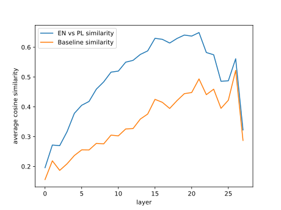
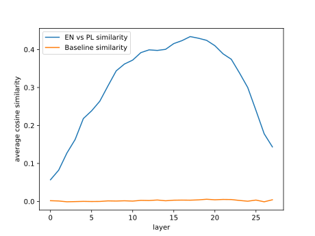

This is the second part of a series about messing with LLM internals; Read the previous part first.
The point of this exercise is to experimentally verify the intuition that the kind of natural language the prompt is formulated in does not matter in the depths of an LLM, because internal layers of the model deal with abstract concepts and not specific words. We’ll check that by comparing the internal representations of the same set of prompts in two natural languages, Polish and English.
Take the same prompt written in two different languages:
Processing these prompts will result in two distinct residual streams (for the last prompt token):
x1, x2, ..., xn
y1, y2, ..., yn
We’ll be calculating cosine similarity between various residual vectors, so from this point on assume they were normalized (all are of length 1).
The per-layer cosine similarity x1Ty1, x2Ty2, ..., xnTyn between the residual streams of the same prompt in different languages should be inverse-U shaped:
The sections below document the experiment in detail. I won’t publish the exact code because:
The per-layer similarity for a single pair of prompts will likely be too noisy to observe the language divergence effect, so I ran the experiment on 265 sentences and averaged the results.
The sentences I used came straight from a more powerful LLM. A bunch of examples:
The sentences are cut in half for three reasons:
.). Because we only inspect the residual
stream of the final token, ending every prompt with a period would
artificially inflate early layer similarity and add noise in deeper
layers.Let’s say that the cosine similarity between 2000-dimensional unit vectors is 0.08. Is that a lot? If you, like me, have spent all of your life in humble 3 dimensions you probably don’t have intuitions about that, so we need a baseline to compare the similarities against.
The residual comparison machinery can be used to establish such a baseline. At any given layer, let u1, u2, ..., um and v1, v2, ..., vm be the normalized residuals across all m = 265 English and Polish prompts. If we take a random permutation σ of {1, ..., m}, then u1Tvσ(1), u2Tvσ(2), ..., umTvσ(m) compares random pairs of prompts at that layer. Repeating this across all layers gives us the baseline we need to judge whether the similarities we’ll see are significant or just random noise.
Because of the constrained compute I have, I decided to run this
experiment on a really dumb 1.5B parameter model:
mlx-community/Qwen2.5-1.5B-4bit (28 layers,
1536-dimensional residual stream). This particular LLM has the following
useful characteristics:
To run this experiment I needed a program that takes the data + model
weights and produces the per-language residuals to compare. At first I
tried Huggingface transformers with residuals dumped via
output_hidden_states=True, but it decided to start the
process by dequantizing the model from 4 to 16 bit to ensure no RAM
stays empty, so I pivoted to using MLX directly.
MLX does not have an easy-to-use equivalent of
output_hidden_states=True, so I had to undertake a tiny
side quest of writing the forward pass by hand. Since we only need the
prefill stage (no autoregressive token generation loop
required), it turned out to be just a few lines of code: embed the input
tokens, loop over model.model.layers with a causal mask,
and record the last-token vector after each layer.
When I ran my experiment for the first time, I got this unimpressive result:

The baseline looks all wrong! Why would the similarity between residuals for random pairs of prompts grow with the layer number?
Turns out LLMs are extremely anisotropic: they project concepts into a very narrow cone, so if not centered, all residual vectors end up similar, regardless of what the prompt was, which explains the bizarre observed baseline behavior.
Once you know this, which took me a long while to figure out, the fix is easy: calculate the mean English and Polish residual at each layer, and subtract it from all residuals for prompts in the corresponding language before vector normalization.
Once the residuals were centered and normalized, the results formed the beautiful curve below:

This exactly matches our initial hypothesis!
Have we done it? Have we peeked inside the mind of the proto-machine-god? This is a very basic exercise, but it clearly shows that it’s possible to reason about simple LLM internals, formulate hypotheses and then check them experimentally, as if LLMs were one of many normal technologies and not some alien species we conjured into being on a GPU…
HF_HUB_OFFLINE=1 in the environment disables this
little bit of additional surveillance.argmax
(temperature = 0), so it’s actually pretty easy to write unit tests for
inference.tqdm.